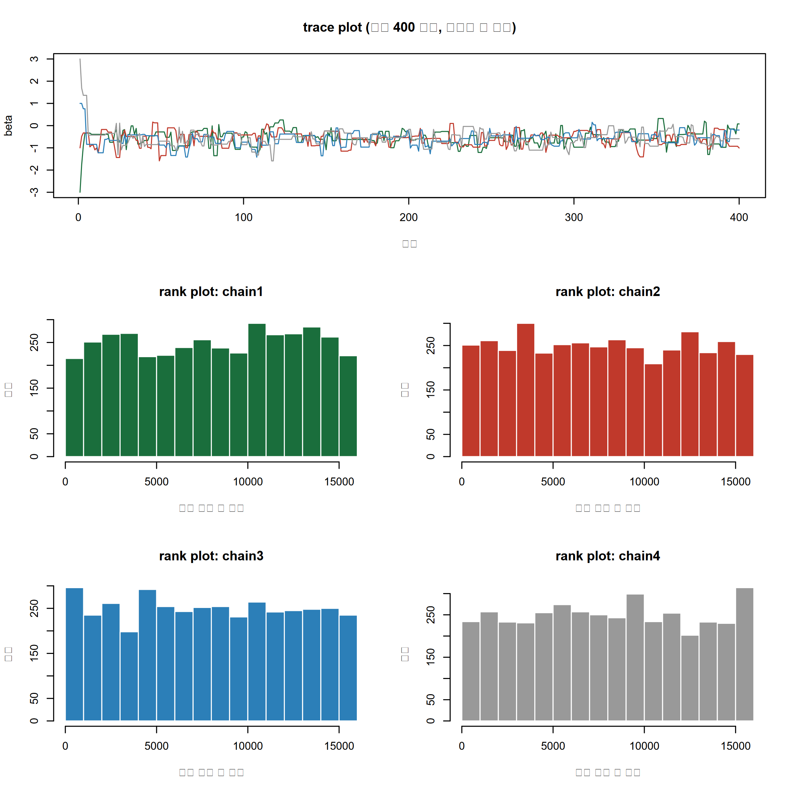
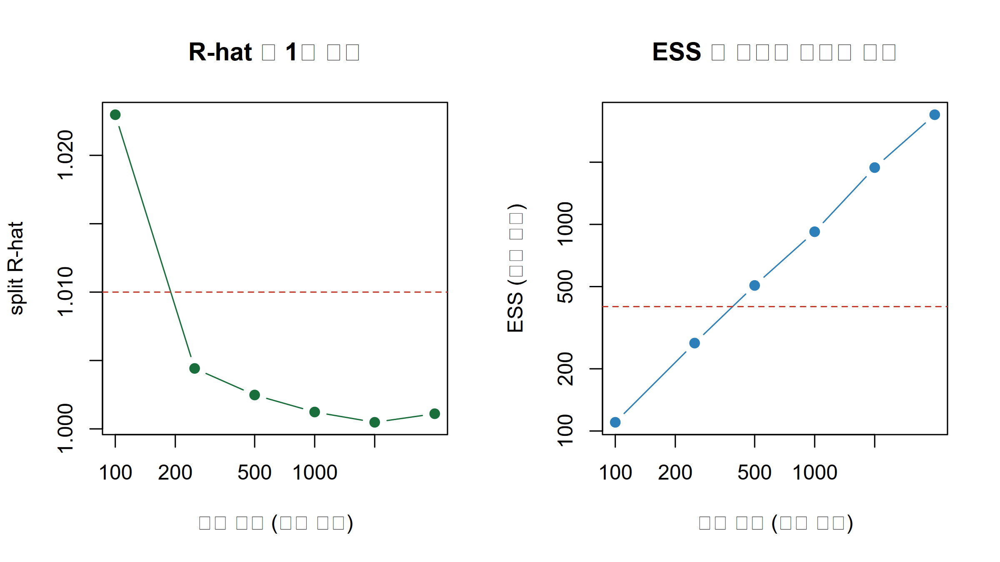
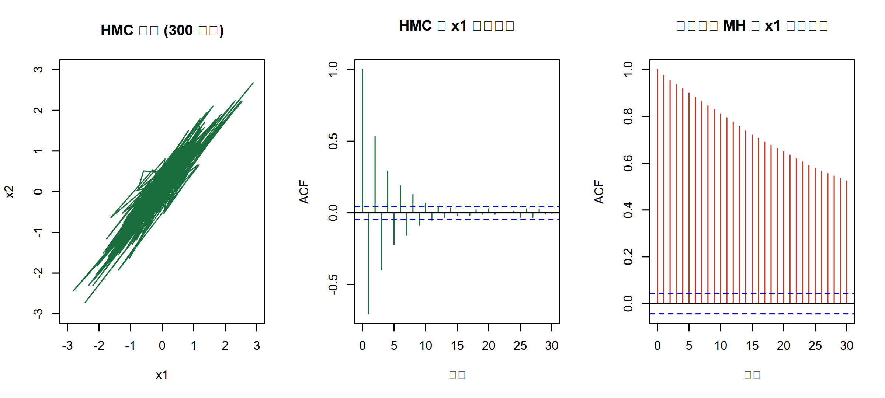
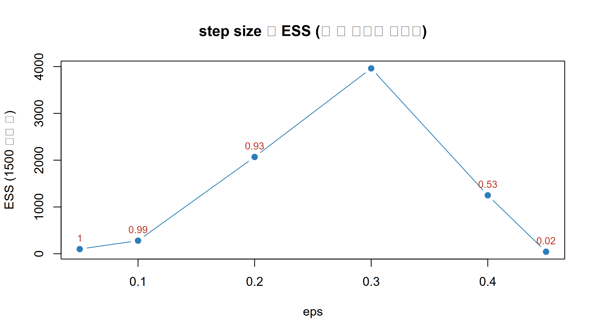

기울기를 쓰는 해밀토니안 몬테카를로와, 사후표본을 믿어도 되는지 판단하는 진단 지표를 직접 구현합니다.
Author
Eunji Ha
Published
September 21, 2026
학습 목표
랜덤워크 MH가 고차원·강한 상관 사후분포에서 느려지는 이유를 전형집합 개념으로 설명할 수 있다.
HMC의 구성요소(운동량, 해밀토니안, leapfrog, step size, step 수)를 설명하고 base R로 구현할 수 있다.
trace plot과 rank plot을 읽고, R-hat·ESS·MCSE를 정의에 따라 직접 계산해 해석할 수 있다.
divergent transition이 무엇을 알려주는 신호인지 설명하고 1차 대처법을 말할 수 있다.
단일세포 RNA-seq 데이터로 세포유형별·환자별 발현 차이를 추정하는 계층모형을 짰다고 합시다. 모수는 환자 40명 × 세포유형 6개에 분산성분까지 250개가 넘고, 환자 효과와 전체 평균은 강하게 상관되어 있습니다. W5에서 만든 랜덤워크 MH를 그대로 붙이면 코드는 돌아가지만 하루를 돌려도 체인은 시작값 근처를 맴돕니다. 문제는 코드가 아니라 알고리즘입니다. 이번 주에는 왜 랜덤워크가 고차원에서 무너지는지, 기울기를 쓰는 HMC가 그것을 어떻게 피하는지, 그리고 어떤 샘플러를 쓰든 결과를 믿어도 되는지 판단하는 숫자들을 다룹니다. 진단 지표는 개념만 보지 않고 base R로 직접 구현합니다.
랜덤워크 MH는 왜 고차원에서 느려지는가
사후분포의 최빈값(mode) 근처는 밀도가 가장 높지만 그 근처의 부피는 거의 0입니다. 차원이 올라갈수록 부피는 바깥으로 폭증하고 밀도는 안으로 급감해서, 둘의 곱인 확률질량은 원점에서 떨어진 얇은 껍질에 몰립니다. 이 껍질을 전형집합(typical set) 이라고 부릅니다. 표준정규 \(d\)차원에서 원점까지의 거리 분포로 확인합니다.
set.seed(42)dims <-c(1, 5, 20, 100); cols <-c("#1a6e3c", "#c0392b", "#2c7fb8", "grey40")plot(NULL, xlim =c(0, 13), ylim =c(0, 0.9), xlab ="원점까지의 거리 ||x||", ylab ="밀도",main ="차원이 커지면 확률질량은 껍질로 밀려난다")# ||x||^2 은 자유도 d 의 카이제곱을 따릅니다for (i inseq_along(dims)) lines(density(sqrt(rchisq(20000, df = dims[i]))), col = cols[i], lwd =2)legend("topright", legend =paste0("d = ", dims), col = cols, lwd =2, bty ="n")
\(d=1\)이면 표본의 68%가 반지름 1 안에 있지만 \(d=20\)에서는 사실상 0입니다. 뽑아야 할 곳은 최빈값이 아니라 껍질이고, 방향을 모르는 랜덤워크 제안은 껍질에서 한 걸음 내디디면 거의 항상 밀도가 훨씬 낮은 껍질 밖으로 나가 기각됩니다. 기각을 피하려고 보폭을 줄이면 이번에는 자기상관이 1에 가까워집니다. 모수 간 상관까지 강하면 껍질이 얇고 길쭉해져 상황이 더 나빠집니다.
수식으로 보기
\(d\)차원 표준정규에서 반지름 \(r=\lVert x\rVert\) 의 밀도는 \(p(r) \propto r^{d-1} e^{-r^2/2}\) 입니다. 부피 항 \(r^{d-1}\)은 급격히 증가하고 밀도 항 \(e^{-r^2/2}\)는 급격히 감소하므로, 곱은 \(r \approx \sqrt{d-1}\) 에서 최대가 되고 폭은 \(O(1)\) 로 유지됩니다. 즉 확률질량은 반지름 \(\sqrt{d}\) 부근의 두께 \(O(1)\) 짜리 껍질에 집중되며, 이것이 전형집합입니다.
해밀토니안 몬테카를로(HMC)
HMC는 어디가 껍질인지를 로그사후의 기울기(gradient) 로 알아냅니다. 밀도가 높아지는 방향을 알면 무작정 흔드는 대신 껍질을 따라 미끄러지는 궤적을 만들 수 있습니다. 물리 비유가 정확합니다. 모수 \(\theta\)를 위치(position), 같은 차원의 보조변수 \(p\)를 운동량(momentum) 이라 부르고, 퍼텐셜 에너지 \(U(\theta)=-\log p(\theta\mid y)\) 와 운동 에너지 \(K(p)=\tfrac12\sum p_i^2\) 의 합인 해밀토니안 \(H=U+K\) 는 이상적인 물리계에서 보존됩니다. 한 번의 반복은 (1) 운동량을 표준정규에서 새로 뽑고, (2) 보폭 \(\varepsilon\)로 leapfrog 적분기를 \(L\)번 돌려 궤적을 따라가고, (3) 도착점을 제안값으로 삼아 \(\min(1, e^{H_0-H_1})\) 로 수용 여부를 정합니다. 적분이 완벽하면 \(H_1=H_0\) 이라 수용확률이 1입니다. leapfrog는 완벽하지 않지만 오차가 누적되지 않게 설계되어 있어서, 잘 조율하면 멀리 이동하면서도 높은 수용률 을 유지합니다. 랜덤워크가 보폭과 수용률을 맞바꿔야 했던 것과 대비됩니다. 이론적으로 계산 비용까지 따진 최적 수용률은 약 0.65이고(Beskos et al. 2013), Stan의 adapt_delta = 0.8은 그보다 보수적인, 안정성을 위한 실무 기본값입니다.
Tip
핵심 직관: 랜덤워크 MH는 눈을 가리고 더듬는 것이고, HMC는 경사를 만져보며 등고선을 따라 미끄러지는 것입니다. 대가는 반복마다 기울기를 \(L\)번 계산하는 비용이고, 얻는 것은 자기상관이 거의 없는 표본입니다.
수식으로 보기
확장된 분포 \(p(\theta,p)\propto\exp\{-U(\theta)-K(p)\}\) 의 \(\theta\) 주변분포는 정확히 사후분포입니다. leapfrog 한 스텝은 \[p_{t+\varepsilon/2} = p_t + \tfrac{\varepsilon}{2}\nabla_\theta \log p(\theta_t\mid y),\quad \theta_{t+\varepsilon} = \theta_t + \varepsilon p_{t+\varepsilon/2},\quad p_{t+\varepsilon} = p_{t+\varepsilon/2} + \tfrac{\varepsilon}{2}\nabla_\theta \log p(\theta_{t+\varepsilon}\mid y)\] 이고 이를 \(L\)번 반복합니다. 수용확률은 \(\alpha=\min(1,\exp\{H(\theta_0,p_0)-H(\theta_L,p_L)\})\), \(H(\theta,p)=-\log p(\theta\mid y)+\tfrac12\sum_i p_i^2\) 입니다. 기호는 \(\varepsilon\)이 step size, \(L\)이 step 수, \(\nabla_\theta\)가 기울기입니다. leapfrog는 시간가역적이고 부피를 보존하므로 제안이 대칭이 되어 비율이 이처럼 단순해집니다.
NUTS: L을 자동으로 정하기
\(L\)이 너무 작으면 랜덤워크와 다를 바 없고, 너무 크면 궤적이 한 바퀴 돌아 출발점으로 되돌아와 계산만 버립니다. NUTS(No-U-Turn Sampler) 는 궤적을 앞뒤로 늘려가다가 양 끝이 서로 가까워지기 시작하면(U턴 조건) 멈추는 방식으로 \(L\)을 매 반복 자동 결정합니다. \(\varepsilon\)은 warmup 구간에서 목표 수용률(adapt_delta, 기본 0.8)에 맞춰 자동 조율됩니다. Stan의 기본 샘플러가 이것이며, 이 챕터에서는 NUTS까지 구현하지 않고 고정된 \(L\)의 HMC까지만 만듭니다.
divergent transition
Warning
divergent transitions after warmup 경고는 샘플러가 조금 부정확했다는 뜻이 아니라 그 영역의 표본을 신뢰할 수 없다는 뜻입니다. leapfrog 에너지 오차가 폭발했다는 것은 사후 기하가 국소적으로 매우 험해서(곡률이 큼) 현재 \(\varepsilon\)으로는 따라갈 수 없다는 신호입니다. 전형적 원인은 계층모형의 깔때기(funnel) 로, 그룹 분산 \(\tau\)가 0에 가까워질수록 개별 효과가 좁은 목으로 빨려 들어가는 모양입니다. divergence가 특정 영역에 몰려 있으면 그 영역이 사실상 탐색되지 않은 것이므로 요약값이 편향됩니다.
대처는 두 가지입니다. adapt_delta를 0.8에서 0.95나 0.99로 올려 \(\varepsilon\)을 작게 만들거나(느려지지만 험한 곳을 따라갈 수 있습니다), 모형을 비중심화(non-centered) 재모수화 합니다. \(\theta_j\sim N(\mu,\tau^2)\) 를 \(\theta_j=\mu+\tau z_j,\; z_j\sim N(0,1)\) 로 바꿔 깔때기 자체를 없애는 방법이며, 자세한 것은 W7에서 다룹니다.
수렴 진단: 결과를 믿어도 되는지
진단은 수렴을 증명하지 못합니다. 다만 수렴하지 않았다는 증거를 찾아낼 뿐이고, 그래서 여러 지표를 함께 봅니다. trace plot 은 반복에 대한 표본값 그림으로, 여러 체인이 같은 구간을 섞어 덮으면(털뭉치 모양) 좋고 체인이 서로 다른 층에 놓이거나 계단식으로 표류하면 나쁩니다. rank plot 은 모든 체인의 표본을 합쳐 순위를 매긴 뒤 체인별 순위 히스토그램을 그린 것으로, 수렴했다면 히스토그램이 모두 균등해야 합니다. 값의 규모에 영향받지 않아 꼬리가 두꺼운 모수에서 읽기 쉽습니다. R-hat 은 체인들이 같은 곳을 보고 있는지를 숫자 하나로 요약합니다. 체인 간 분산 \(B\)가 체인 내 분산 \(W\)에 비해 크면 1보다 커지며 최근 기준은 1.01 이하 입니다. 한 체인이 천천히 표류하는 경우를 잡기 위해 각 체인을 전반부·후반부로 쪼개 체인 수를 두 배로 만든 split-R-hat 을 씁니다. ESS(유효표본수, effective sample size) 는 자기상관 때문에 잃은 정보를 반영해 독립표본 몇 개에 해당하는지를 알려줍니다. 평균·표준편차 같은 중앙부 요약에는 bulk-ESS, 95% 구간 같은 꼬리 요약에는 tail-ESS 를 보며 모수마다 400 이상 을 권장합니다. MCSE(몬테카를로 표준오차) 는 표본이 유한해서 생기는 추정 오차로, 보고하려는 자릿수보다 작아야 합니다.
수식으로 보기
체인 \(m\)개, 각 길이 \(n\), 표본 \(\theta^{(ij)}\) 에 대해 \[W=\frac{1}{m}\sum_{j}s_j^2,\;\; B=\frac{n}{m-1}\sum_{j}(\bar\theta_{\cdot j}-\bar\theta_{\cdot\cdot})^2,\;\; \widehat{\mathrm{var}}^{+}=\frac{n-1}{n}W+\frac{1}{n}B,\;\; \widehat R=\sqrt{\frac{\widehat{\mathrm{var}}^{+}}{W}},\;\; \mathrm{ESS}=\frac{mn}{\hat\tau},\;\; \hat\tau=-1+2\sum_{k\ge0}\left(\hat\rho_{2k}+\hat\rho_{2k+1}\right),\;\; \mathrm{MCSE}=\sqrt{\frac{\widehat{\mathrm{var}}^{+}}{\mathrm{ESS}}}\] 여기서 \(s_j^2\)는 \(j\)번째 체인의 표본분산, \(\hat\rho_t\)는 시차 \(t\)의 자기상관이고 \(m,n\)은 split 이후 의 체인 수와 길이입니다. \(\hat\rho_t\)는 체인별 자기공분산을 평균한 뒤 \(\hat\rho_t=1-(W-\widehat{\mathrm{cov}}_t)/\widehat{\mathrm{var}}^{+}\) 로 계산합니다. 짝은 시차 0부터 묶습니다. \(\hat\rho_0\approx1\)이므로 첫 짝이 \(\hat\rho_0+\hat\rho_1\) 이 되고, 중복해 센 \(\hat\rho_0\) 을 빼려고 앞에 \(-1\)이 붙습니다. 짝 합 수열은 이론적으로 양수이면서 비증가해야 하므로, 직전 짝 합보다 커지면 직전 값으로 눌러 비증가로 만든 뒤(Geyer의 초기 단조 수열) 처음 음수가 되는 짝에서 자릅니다. 잡음이 섞인 큰 시차가 합을 오염시키는 것을 막는 장치입니다. 반상관(antithetic)이 있어 \(\hat\tau<1\)이면 ESS가 표본 수 \(mn\)을 넘을 수 있으며, 이는 오류가 아니라 정상적인 결과입니다. 다만 \(\hat\tau\)가 0에 붙어 ESS가 발산하지 않도록 Stan과 같은 하한 \(\hat\tau \ge 1/\log_{10}(mn)\) 만 둡니다.
실습: base R로 직접 구현
W4·W5와 같은 가상의 데이터를 씁니다. 이형접합 부위 하나에서 read 40개를 관측했고 그중 대립유전자가 14개였습니다. 로짓 스케일 모수 \(\beta=\log\{\theta/(1-\theta)\}\)에 \(N(0,1.5^2)\) 사전분포를 둡니다.
set.seed(42); n_reads <-40; y_alt <-rbinom(1, size = n_reads, prob =0.25) # W4·W5와 같은 자료log1pexp <-function(x) ifelse(x >30, x, log1p(exp(x))) # 오버플로 방지 도우미log_post <-function(beta) # W5의 log_post_binom 과 같은 함수 y_alt * beta - n_reads *log1pexp(beta) +dnorm(beta, 0, 1.5, log =TRUE)cat("관측:", y_alt, "/", n_reads, "\n")
관측: 14 / 40
(1) 랜덤워크 MH를 4개 체인으로
시작값을 넓게 흩어 놓아야 체인들이 같은 곳으로 모이는지 확인할 수 있습니다.
# 차원 d 에 상관없이 쓰는 랜덤워크 MH (뒤에서 2차원 목표에도 재사용합니다)mh_chain <-function(log_target, start, n_iter, prop_sd) { d <-length(start); out <-matrix(NA_real_, n_iter, d); out[1, ] <- start x <- start; lp <-log_target(x); n_acc <-0for (t in2:n_iter) { prop <- x +rnorm(d, 0, prop_sd) # 대칭 제안 lp_prop <-log_target(prop)if (log(runif(1)) < lp_prop - lp) { # 로그 스케일에서 비교 x <- prop; lp <- lp_prop; n_acc <- n_acc +1 } out[t, ] <- x }list(draws = out, acc_rate = n_acc / (n_iter -1))}run_mh_chains <-function(log_target, starts, n_iter, prop_sd, seed =42) {set.seed(seed) # (iterations x chains) 행렬로 모읍니다 out <-matrix(NA_real_, n_iter, length(starts)); acc <-numeric(length(starts))for (j inseq_along(starts)) { r <-mh_chain(log_target, starts[j], n_iter, prop_sd) out[, j] <- r$draws[, 1]; acc[j] <- r$acc_rate }colnames(out) <-paste0("chain", seq_along(starts))list(draws = out, acc_rate = acc)}fit_good <-run_mh_chains(log_post, c(-3, -1, 1, 3), n_iter =4000, prop_sd =0.9)draws_good <- fit_good$draws; dim(draws_good); round(fit_good$acc_rate, 3)
[1] 4000 4
[1] 0.397 0.388 0.390 0.404
chain_cols <-c("#1a6e3c", "#c0392b", "#2c7fb8", "grey60")layout(matrix(c(1, 1, 2, 3, 4, 5), nrow =3, byrow =TRUE)) # 위 한 칸에 trace, 아래 네 칸에 rankmatplot(draws_good[1:400, ], type ="l", lty =1, col = chain_cols,main ="trace plot (처음 400 반복, 체인별 색 구분)", xlab ="반복", ylab ="beta")rank_all <-matrix(rank(as.vector(draws_good)), nrow =nrow(draws_good)) # 전체 표본 순위for (j in1:4) hist(rank_all[, j], breaks =20, col = chain_cols[j], border ="white",main =paste0("rank plot: ", colnames(draws_good)[j]),xlab ="전체 표본 내 순위", ylab ="빈도")

네 체인이 같은 구간을 덮고 순위 히스토그램이 균등에 가깝습니다. 수렴 실패의 증거는 보이지 않습니다.
(2) R-hat, ESS, MCSE 직접 구현
# split-R-hat: 각 체인을 반으로 쪼개 체인 수를 2배로 만든 뒤 계산합니다split_rhat <-function(sims) { sims <-as.matrix(sims); n <-nrow(sims); h <-floor(n /2) sp <-cbind(sims[1:h, , drop =FALSE], sims[(n - h +1):n, , drop =FALSE]) n_s <-nrow(sp) w <-mean(apply(sp, 2, var)) # 체인 내 분산 W b <- n_s *var(colMeans(sp)) # 체인 간 분산 Bsqrt((((n_s -1) / n_s) * w + b / n_s) / w)}var_plus_hat <-function(sims) { # W 와 체인 간 분산을 섞은 var^+ sims <-as.matrix(sims); n <-nrow(sims); m <-ncol(sims) ((n -1) / n) *mean(apply(sims, 2, var)) +if (m >1) var(colMeans(sims)) else0}# ESS: split + 시차 0부터 둘씩 묶은 Geyer 초기 단조 수열ess_basic <-function(sims) { sims <-as.matrix(sims); n0 <-nrow(sims); h <-floor(n0 /2) sp <-cbind(sims[1:h, , drop =FALSE], sims[(n0 - h +1):n0, , drop =FALSE]) # split n <-nrow(sp); m <-ncol(sp); w <-mean(apply(sp, 2, var)); var_plus <-var_plus_hat(sp)if (!is.finite(var_plus) || var_plus <=0) return(NA_real_) acov <-sapply(seq_len(m), function(j) # 체인별 자기공분산을 시차 n-1 까지acf(sp[, j], lag.max = n -1, type ="covariance", plot =FALSE)$acf[, 1, 1]) rho <-1- (w -rowMeans(as.matrix(acov))) / var_plus # rho[k] 는 시차 k-1 의 자기상관 n_pair <-floor(length(rho) /2) # 시차 0부터 둘씩: (r0+r1), (r2+r3), ... pair <-cummin(rho[2* (1:n_pair) -1] + rho[2* (1:n_pair)]) # 초기 단조 수열 keep <-which(pair <0)[1] -1; if (is.na(keep)) keep <- n_pair # 첫 음수 직전까지 tau <--1+2* (if (keep >=1) sum(pair[1:keep]) else0) m * n /max(tau, 1/log10(m * n)) # mn / tau. 상한 없음(반상관이면 ESS > mn)}mcse_mean <-function(sims) sqrt(var_plus_hat(as.matrix(sims)) /ess_basic(sims))c(rhat =split_rhat(draws_good), ess =ess_basic(draws_good), mcse =mcse_mean(draws_good))
par(mfrow =c(1, 2))plot(lens, tab[, "rhat"], type ="b", pch =19, col ="#1a6e3c", log ="x",main ="R-hat 은 1로 수렴", xlab ="체인 길이 (로그 눈금)", ylab ="split R-hat")abline(h =1.01, col ="#c0392b", lty =2) # 붉은 점선이 권장 기준 1.01plot(lens, tab[, "ess"], type ="b", pch =19, col ="#2c7fb8", log ="xy",main ="ESS 는 길이에 비례해 증가", xlab ="체인 길이 (로그 눈금)", ylab ="ESS (로그 눈금)")abline(h =400, col ="#c0392b", lty =2) # 붉은 점선이 권장 기준 400

R-hat은 길이가 짧을 때만 1보다 크고 금세 1에 붙습니다. 반면 ESS는 길이에 거의 비례해 늘고 MCSE는 \(1/\sqrt{\mathrm{ESS}}\) 로 줄어듭니다. R-hat이 1이라고 표본이 충분한 것은 아닙니다. 두 지표는 다른 질문에 답합니다.
(3) 수렴하지 못한 사례 만들기
제안 분산을 아주 작게 하면 체인들은 각자 시작한 자리 근처에 갇힙니다.
draws_bad <-run_mh_chains(log_post, c(-6, -2, 2, 6), n_iter =4000, prop_sd =0.01, seed =7)$drawsmatplot(draws_bad, type ="l", lty =1, col = chain_cols,main ="제안 분산이 너무 작아 체인이 갇힌 경우", xlab ="반복", ylab ="beta")
같은 2,000 반복인데 ESS가 6,602 대 18로 수백 배 벌어지고 수용률도 HMC가 높습니다. HMC의 ESS가 표본 수 2,000을 넘는 것은 오류가 아닙니다. 자기상관 함수로 이유를 봅니다.
par(mfrow =c(1, 3))plot(hmc_fit$draws[1:300, ], type ="l", col ="#1a6e3c", xlim =c(-3, 3), ylim =c(-3, 3),main ="HMC 궤적 (300 반복)", xlab ="x1", ylab ="x2")acf(hmc_fit$draws[, 1], lag.max =30, col ="#1a6e3c", main ="HMC 의 x1 자기상관", xlab ="시차", ylab ="ACF")acf(mh2_fit$draws[, 1], lag.max =30, col ="#c0392b", main ="랜덤워크 MH 의 x1 자기상관", xlab ="시차", ylab ="ACF")

랜덤워크는 시차 30에서도 자기상관이 0.52로 남아 있는 반면, HMC는 시차 1에서 이미 \(-0.71\)이고 부호가 번갈아 나타납니다(반상관, antithetic). 음의 자기상관이 짝 합을 줄여 \(\hat\tau\)가 1보다 작아지고, 그래서 ESS가 표본 수를 넘습니다. 연속한 표본이 서로 반대편을 번갈아 짚어 평균의 오차가 독립표본보다도 작아지는 것이며, ess_basic에 상한을 두지 않은 이유입니다.
(5) step size를 키우면 에너지가 폭발한다
leapfrog는 \(\varepsilon\)이 임계값을 넘으면 수치적으로 불안정해집니다. 궤적을 한 번만 돌려 에너지 오차 \(|H_1-H_0|\) 을 재봅니다.
leapfrog_energy_error <-function(x0, p0, eps, n_leap) { h0 <--log_target2(x0) +0.5*sum(p0^2); x <- x0; p <- p0 +0.5* eps *grad_target2(x)for (l inseq_len(n_leap)) { x <- x + eps * pif (l < n_leap) p <- p + eps *grad_target2(x) } p <- p +0.5* eps *grad_target2(x) (-log_target2(x) +0.5*sum(p^2)) - h0}eps_grid <-seq(0.05, 0.7, length.out =40)err <-sapply(eps_grid, function(e) { set.seed(1) # eps 마다 동일한 출발점과 운동량을 사용mean(abs(sapply(1:30, function(i)leapfrog_energy_error(as.numeric(rnorm(2) %*%chol(sigma_mat)), rnorm(2), e, 15)))) })eps_limit <-2/sqrt(max(eigen(prec_mat, only.values =TRUE)$values)) # leapfrog 안정 한계plot(eps_grid, err, type ="l", lwd =2, col ="#1a6e3c", log ="y",main ="step size 와 leapfrog 에너지 오차",xlab ="step size (eps)", ylab ="평균 |H1 - H0| (로그 눈금)")abline(v = eps_limit, col ="#c0392b", lty =2, lwd =2); abline(h =1000, col ="grey60", lty =3)legend("topleft", bty ="n", col =c("#c0392b", "grey60"), lty =c(2, 3),legend =c(paste("안정 한계", round(eps_limit, 3)), "divergence 판정선 1000"))
\(\varepsilon\)이 한계를 넘는 순간 오차가 수십 자릿수로 뛰어오릅니다. 이때 \(e^{H_0-H_1}\)은 0이 되어 모든 제안이 기각되고, Stan은 이런 반복을 divergent transition으로 셉니다. 실제 사후분포에서는 곡률이 위치마다 다르므로 전역 \(\varepsilon\)이 대부분의 영역에서 안정적이어도 목이 좁은 일부 영역에서만 터집니다. divergence가 특정 영역에 몰려 나타나는 이유입니다.
실습: 패키지로 풀기
실무에서는 HMC를 직접 짜지 않고 Stan을 씁니다. 아래 코드는 이 환경에서 실행하지 않습니다(eval: false). 앞의 이항 예제를 Stan으로 쓰면 이렇습니다.
data { int<lower=0> n; int<lower=0> y; }parameters { real beta; } // 로짓 스케일 모수model { beta ~ normal(0, 1.5); // 사전분포 y ~ binomial_logit(n, beta); } // 가능도
회귀모형이라면 brms가 Stan 코드를 대신 써 줍니다. 아래 dat은 샘플별 변이 보유 여부 hit과 공변량 age, batch를 담은 가상의 데이터입니다.
library(rstan)fit <-stan(file ="binom_logit.stan", data =list(n =40, y =14), chains =4,iter =2000, warmup =1000, control =list(adapt_delta =0.95))print(fit, pars ="beta") # Rhat, n_eff, se_mean 이 함께 나옵니다library(brms)fit_brm <-brm(hit ~ age + (1| batch), family =bernoulli(), data = dat,chains =4, iter =2000, control =list(adapt_delta =0.95))library(posterior); library(bayesplot)dr <-as_draws_df(fit_brm)summarise_draws(dr, "mean", "sd", "rhat", "ess_bulk", "ess_tail", "mcse_mean")mcmc_trace(dr, pars ="b_age") # trace plotmcmc_rank_overlay(dr, pars ="b_age") # rank plot
summarise_draws()가 돌려주는 rhat은 위에서 직접 구현한 split_rhat과 같은 정의입니다. ess_bulk는 ess_basic에 순위 정규화(rank normalization) 를 한 겹 더한 버전이라 값이 조금 다를 수 있고, ess_tail은 5%·95% 분위수 지표에 같은 계산을 적용한 것이라 아예 다른 양입니다. 보고 전 점검 순서는 항상 같습니다. divergence 0 → R-hat 1.01 이하 → ESS 400 이상 → MCSE가 보고 자릿수보다 작음.
연습문제
1. 아래 코드로 만든 체인 행렬에서 \(W\), \(B\), \(\widehat{\mathrm{var}}^{+}\) 를 직접 계산해 R-hat을 구하고, split_rhat()의 값과 비교하십시오. 왜 두 값이 다릅니까?
풀이
set.seed(11)ex_draws <-cbind(rnorm(500, 0.0, 1.0), rnorm(500, 0.3, 1.0),rnorm(500, -0.2, 1.0), rnorm(500, 0.1, 1.4))n <-nrow(ex_draws); w <-mean(apply(ex_draws, 2, var)) # 체인 내 분산 Wb <- n *var(colMeans(ex_draws)); var_plus <- ((n -1) / n) * w + b / n # 체인 간 분산 Bround(c(W = w, B = b, var_plus = var_plus, rhat_plain =sqrt(var_plus / w),rhat_split =split_rhat(ex_draws)), 4)
W B var_plus rhat_plain rhat_split
1.2182 24.6720 1.2651 1.0191 1.0164
체인마다 평균이 조금씩 달라 \(B\)가 0이 아니고 R-hat이 1보다 큽니다. split 버전은 각 체인을 반으로 쪼개 체인 수를 8개로 늘려 계산하므로 각 반쪽의 평균 차이가 추가로 반영되어 값이 다릅니다. 체인이 서서히 표류하는 경우에는 split 버전이 더 큰 값을 내어 실패를 잡아냅니다.
2. thinning(솎아내기)이 ESS를 늘려주지 않음을 코드로 확인하십시오. draws_good을 5개마다 하나씩 남겨 ESS를 다시 계산해 보십시오.
풀이
thin_draws <- draws_good[seq(1, nrow(draws_good), by =5), , drop =FALSE]round(c(n_full =length(draws_good), ess_full =ess_basic(draws_good),n_thin =length(thin_draws), ess_thin =ess_basic(thin_draws)), 1)
표본 수는 1/5로 줄었지만 ESS는 늘지 않았고 오히려 줄었습니다(3,395 → 2,590). thinning은 자기상관을 없애는 것이 아니라 이미 얻은 정보를 버리는 것이므로 ESS는 기껏해야 유지됩니다. 정당한 경우는 메모리가 부족할 때뿐이며, 표본이 부족하면 솎아낼 것이 아니라 더 돌려야 합니다.
plot(res3[, "eps"], res3[, "ess"], type ="b", pch =19, col ="#2c7fb8",main ="step size 와 ESS (점 옆 숫자는 수용률)", xlab ="eps", ylab ="ESS (1500 반복 중)")text(res3[, "eps"], res3[, "ess"], round(res3[, "acc"], 2), pos =3, cex =0.8, col ="#c0392b")

\(\varepsilon\)이 작으면 수용률은 1에 가깝지만 궤적이 짧아 ESS가 낮습니다. 키우면 ESS가 급격히 오르다가 안정 한계를 넘는 순간 수용률이 0으로 무너지고 divergence가 쏟아지며 ESS도 함께 붕괴합니다. 이 격자에서는 \(\varepsilon=0.3\), 수용률 0.82 근처가 가장 좋았습니다. 계산 비용까지 따진 이론적 최적 수용률은 약 0.65이고(Beskos et al. 2013), Stan의 adapt_delta 기본값 0.8은 그보다 안전한 쪽에 둔 실무값입니다. divergence가 보이면 adapt_delta를 올려 \(\varepsilon\)을 줄이는 것이 이 그림의 왼쪽으로 물러나는 조치입니다.
정리
차원이 커지면 확률질량은 최빈값이 아니라 전형집합이라는 얇은 껍질에 몰리고, 방향 정보가 없는 랜덤워크 제안은 거의 항상 껍질을 벗어나 기각됩니다.
HMC는 로그사후의 기울기로 궤적을 만들어 멀리 이동하면서도 높은 수용률을 유지합니다. 조율 대상은 step size \(\varepsilon\)과 step 수 \(L\)이며, NUTS는 \(L\)을 U턴 조건으로 자동 결정합니다.
divergent transition은 leapfrog 에너지 오차가 폭발했다는 뜻이고 사후 기하가 험하다는 신호입니다. adapt_delta 상향과 비중심화 재모수화가 표준 대처입니다.
R-hat은 체인들이 같은 분포를 보는지(1.01 이하), ESS는 표본이 얼마나 정보를 담았는지(400 이상)를 봅니다. 둘은 서로 다른 질문이므로 함께 확인해야 하고, MCSE는 보고할 자릿수의 기준이 됩니다. thinning은 ESS를 늘리지 않으므로 표본이 부족하면 더 돌리거나 더 나은 샘플러를 써야 합니다.
다음 시간
W7에서는 계층모형(hierarchical model)을 다룹니다. 환자별·배치별 효과를 부분 풀링(partial pooling)으로 묶는 구조를 세우고, 이번 주에 예고한 깔때기 기하가 왜 생기는지, 비중심화 재모수화가 그것을 어떻게 펴는지를 divergence 수로 직접 비교합니다.